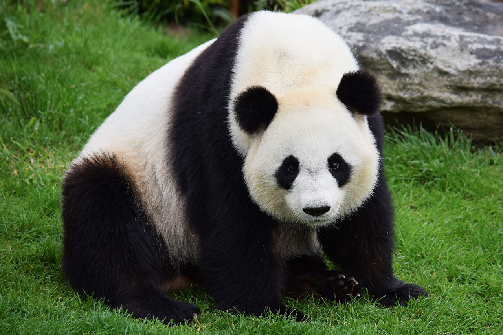

Animais em Extinção

Contact: emanuellybafitis@gmail.com



Panda-gigante (Ailuropoda melanoleuca)
Os pandas-gigantes vivem na região centro-sul da China. São 2500 indivíduos vivendo em pontos isolados, o que acarreta um obstáculo para o acasalamento e coleta de alimentos dos animais.A dificuldade para promover a reprodução dos pandas são enormes, pois as fêmeas só entram no cio uma vez por ano, por no máximo três dias.
Em 2005, em projetos de reprodução em cativeiro, a espécie reproduziu 25 filhotes.